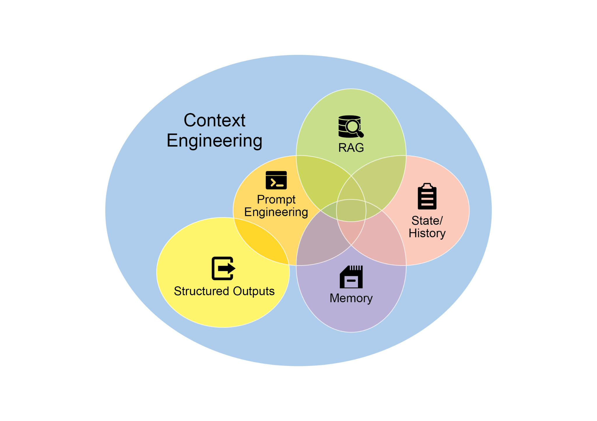
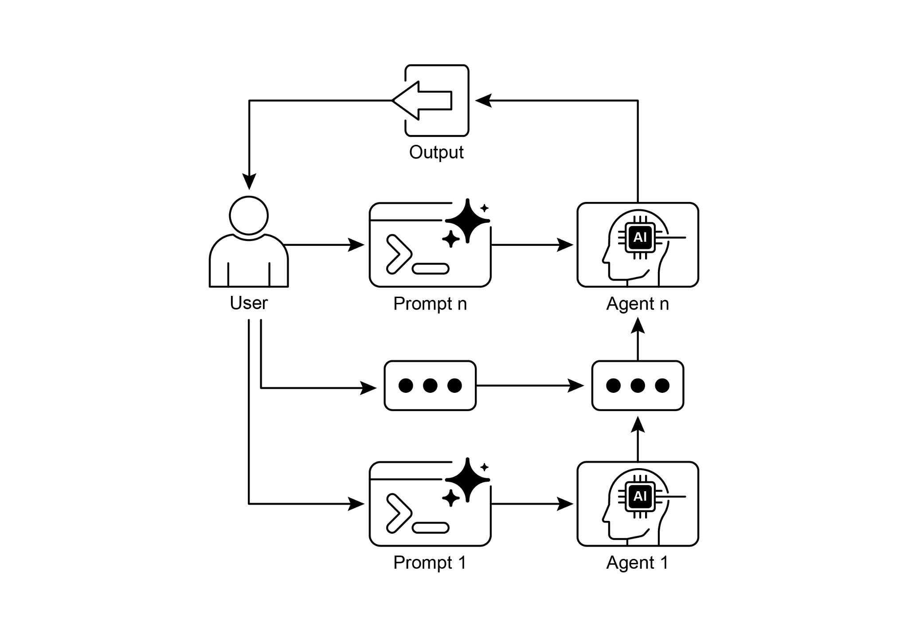

读书 · Agentic Design Patterns · 中英对照
第 1 章 · 提示链 Prompt Chaining
Chapter 1: Prompt Chaining · 《Agentic Design Patterns》 · Antonio Gulli · 2025
把复杂任务拆成顺序子任务，前一步输出作为后一步输入，提升可靠性与可控性。
← 返回导读 原书 PDF · 第21页起 下一章:第2章
本章要点
① 分而治之：将庞杂任务分解为聚焦的子问题序列 ① 每步输出作为下一步输入，形成依赖链与上下文积累 ① 结构化输出（JSON/XML）保证步骤间数据完整可解析 ① 可插入外部工具与确定性逻辑，是构建Agent的基础模式
本章一图流
拆解任务把庞杂问题切成聚焦子问题→串联步骤前一步输出喂给下一步→结构化输出JSON/XML保证可解析传递→插入工具接入外部工具与确定性逻辑→构建Agent形成可靠可控的基础模式
复杂任务拆成顺序子任务，靠结构化输出串联，是Agent的基础模式。
原书插图


本章划线句
划线句(逐字校验)
"Rather than expecting an LLM to solve a complex problem in a single, monolithic step, prompt chaining advocates for a divide-and-conquer strategy."
为什么值得划线:点明本章核心：用分治替代单次大提示
划线句(逐字校验)
"The output of one step acting as the input for the next is crucial."
为什么值得划线:一句话概括链式依赖的本质机制
划线句(逐字校验)
"The reliability of a prompt chain is highly dependent on the integrity of the data passed between steps."
为什么值得划线:强调结构化输出对链条可靠性的关键作用
正文(英中对照)
第1章：提示链（Prompt Chaining） Chapter 1: Prompt Chaining
"Prompt Chaining Pattern Overview Prompt chaining, sometimes referred to as Pipeline pattern, represents a powerful paradigm for handling intricate tasks when leveraging large language models (LLMs). Rather than expecting an LLM to solve a complex problem in a single, monolithic step, prompt chaining advocates for a divide-and-conquer strategy. The core idea is to break down the original, daunting problem into a sequence of smaller, more manageable sub-problems. Each sub-problem is addressed individually through a specifically designed prompt, and the output generated from one prompt is strategically fed as input into the subsequent prompt in the chain."
提示链模式概述 提示链（Prompt Chaining），有时也称为流水线模式（Pipeline pattern），是在利用大型语言模型（LLM）时处理复杂任务的一种强大范式。提示链不期望 LLM 在单个、单体式的步骤中解决复杂问题，而是提倡分而治之的策略。其核心思想是将原本艰巨的问题分解为一系列更小、更易管理的子问题。每个子问题都通过专门设计的 prompt 单独处理，并且一个 prompt 生成的输出会被策略性地作为输入馈送到链中的下一个 prompt。
导读注:核心是分而治之：把复杂任务拆成子问题，前一步输出作为下一步输入。
"This sequential processing technique inherently introduces modularity and clarity into the interaction with LLMs. By decomposing a complex task, it becomes easier to understand and debug each individual step, making the overall process more robust and interpretable. Each step in the chain can be meticulously crafted and optimized to focus on a specific aspect of the larger problem, leading to more accurate and focused outputs. The output of one step acting as the input for the next is crucial. This passing of information establishes a dependency chain, hence the name, where the context and results of previous operations guide the subsequent processing."
这种顺序处理技术在与 LLM（大语言模型）交互时天然引入了模块化和清晰性。通过分解复杂任务，每个单独步骤都更易于理解和调试，从而使整体流程更加健壮和可解释。链中的每一步都可以被精心设计和优化，以聚焦于更大问题的某个特定方面，从而产生更准确、更聚焦的输出。一步的输出作为下一步的输入至关重要。这种信息传递建立了一条依赖链，因此得名，其中先前操作的上下文和结果引导后续处理。
导读注:顺序分解让 LLM 交互更清晰可调试，依赖链是核心机制。
"This allows the LLM to build on its previous work, refine its understanding, and progressively move closer to the desired solution. Furthermore, prompt chaining is not just about breaking down problems; it also enables the integration of external knowledge and tools. At each step, the LLM can be instructed to interact with external systems, APIs, or databases, enriching its knowledge and abilities beyond its internal training data. This capability dramatically expands the potential of LLMs, allowing them to function not just as isolated models but as integral components of broader, more intelligent systems. The significance of prompt chaining extends beyond simple problem-solving."
这使 LLM 能够基于其先前的工作继续构建、完善其理解，并逐步接近期望的解决方案。此外，prompt chaining 不仅仅是分解问题；它还支持整合外部知识与工具。在每一步中，可以指示 LLM 与外部系统、API 或数据库交互，从而丰富其知识和能力，超越其内部训练数据。这一能力极大地扩展了 LLM 的潜力，使其不仅作为孤立的模型运行，还能成为更广泛、更智能系统中不可或缺的组成部分。prompt chaining 的意义超越了简单的问题解决。
导读注:强调 prompt chaining 不仅分解问题，还能整合外部工具，让 LLM 成为更大系统的组件。
"It serves as a foundational technique for building sophisticated AI agents. These agents can utilize prompt chains to autonomously plan, reason, and act in dynamic environments. By strategically structuring the sequence of prompts, an agent can engage in tasks requiring multi-step reasoning, planning, and decision-making."
它作为构建复杂 AI agent（智能体）的基础技术。这些 agent 可以利用 prompt chain（提示链）在动态环境中自主规划、推理和行动。通过策略性地组织 prompt 序列，agent 能够参与需要多步推理、规划和决策的任务。
导读注:点出 prompt chain 是 agent 自主规划与多步推理的基础技术。
"Such agent workflows can mimic human thought processes more closely, allowing for more natural and effective interactions with complex domains and systems. 1 Limitations of single prompts: For multifaceted tasks, using a single, complex prompt for an LLM can be inefficient, causing the model to struggle with constraints and instructions, potentially leading to instruction neglect where parts of the prompt are overlooked, contextual drift where the model loses track of the initial context, error propagation where early errors amplify, prompts which require a longer context window where the model gets insufficient information to respond back and hallucination where the cognitive load increases the chance of incorrect information."
此类 agent 工作流能更贴近地模拟人类思维过程，从而在复杂领域和系统中实现更自然、更有效的交互。1 单一 prompt 的局限性：对于多面向任务，为 LLM 使用单个复杂 prompt 可能效率低下，导致模型难以处理约束和指令，可能引发指令忽视（instruction neglect，即 prompt 的部分内容被忽略）、上下文漂移（contextual drift，即模型丢失初始上下文）、错误传播（error propagation，即早期错误被放大）、需要更长上下文窗口的 prompt（此时模型获得的信息不足以回应）以及幻觉（hallucination，即认知负荷增加导致错误信息的概率上升）。
导读注:单一复杂 prompt 的五大失效模式是理解 agent 工作流必要性的关键。
"For example, a query asking to analyze a market research report, summarize findings, identify trends with data points, and draft an email risks failure as the model might summarize well but fail to extract data or draft an email properly. Enhanced Reliability Through Sequential Decomposition: Prompt chaining addresses these challenges by breaking the complex task into a focused, sequential workflow, which significantly improves reliability and control. Given the example above, a pipeline or chained approach can be described as follows: 1. Initial Prompt (Summarization): "Summarize the key findings of the following market research report: [text]." The model's sole focus is summarization, increasing the accuracy of this initial step. 2."
例如，一个要求分析市场研究报告、总结发现、结合数据点识别趋势并起草邮件的查询存在失败风险，因为模型可能总结得很好，却无法提取数据或正确起草邮件。通过顺序分解提升可靠性：Prompt chaining（提示链）通过将复杂任务拆分为聚焦的顺序工作流来应对这些挑战，从而显著提升可靠性与控制力。以上述示例为例，管道或链式方法可描述如下：1. 初始 Prompt（总结）："总结以下市场研究报告的关键发现：[text]。"模型的唯一焦点是总结，这提高了这一初始步骤的准确性。2.
导读注:提示链把多任务查询拆成单步，避免模型顾此失彼。
"Second Prompt (Trend Identification): "Using the summary, identify the top three emerging trends and extract the specific data points that support each trend: [output from step 1]." This prompt is now more constrained and builds directly upon a validated output. 3. Third Prompt (Email Composition): "Draft a concise email to the marketing team that outlines the following trends and their supporting data: [output from step 2]." This decomposition allows for more granular control over the process. Each step is simpler and less ambiguous, which reduces the cognitive load on the model and leads to a more accurate and reliable final output."
第二个 prompt（趋势识别）："使用该摘要，识别出三大新兴趋势，并提取支持每个趋势的具体数据点：[步骤 1 的输出]。"这个 prompt 现在约束更强，并直接建立在经过验证的输出之上。3. 第三个 prompt（邮件撰写）："起草一封发给营销团队的简洁邮件，概述以下趋势及其支持数据：[步骤 2 的输出]。"这种分解方式允许对过程进行更细粒度的控制。每一步都更简单、歧义更少，这降低了模型的认知负荷，并带来更准确、更可靠的最终输出。
导读注:展示 prompt 分解如何通过降低认知负荷提升输出准确性与可靠性。
"This modularity is analogous to a computational pipeline where each function performs a specific operation before passing its result to the next. To ensure an accurate response for each specific task, the model can be assigned a distinct role at every stage. For example, in the given scenario, the initial prompt could be designated as "Market Analyst," the subsequent prompt as "Trade Analyst," and the third prompt as "Expert Documentation Writer," and so forth. The Role of Structured Output: The reliability of a prompt chain is highly dependent on the integrity of the data passed between steps. If the output of one prompt is ambiguous or poorly formatted, the subsequent prompt may fail due to faulty input."
这种模块化类似于一个计算流水线（computational pipeline），其中每个函数执行特定操作，然后将结果传递给下一个。为确保每个特定任务都能得到准确的响应，可以在每个阶段为模型分配一个不同的角色。例如，在给定场景中，初始 prompt 可指定为“市场分析师（Market Analyst）”，后续 prompt 为“交易分析师（Trade Analyst）”，第三个 prompt 为“专家文档撰写者（Expert Documentation Writer）”，依此类推。结构化输出的作用：prompt 链的可靠性高度依赖于步骤之间传递数据的完整性。如果一个 prompt 的输出含糊不清或格式不佳，后续 prompt 可能因输入有误而失败。
导读注:强调 prompt 链中角色分工与结构化输出对可靠性的关键作用。
"To mitigate this, specifying a structured output format, such as JSON or XML, is crucial. For example, the output from the trend identification step could be formatted as a JSON object: 2 { "trends": [ { "trend_name": "AI-Powered Personalization", "supporting_data": "73% of consumers prefer to do business with brands that use personal information to make their shopping experiences more relevant." }, { "trend_name": "Sustainable and Ethical Brands", "supporting_data": "Sales of products with ESG-related claims grew 28% over the last five years, compared to 20% for products without." } ] } This structured format ensures that the data is machine-readable and can be precisely parsed and inserted into the next prompt without ambiguity."
为缓解这一问题，指定结构化输出格式（如 JSON 或 XML）至关重要。例如，趋势识别步骤的输出可以格式化为一个 JSON 对象：2 { "trends": [ { "trend_name": "AI-Powered Personalization", "supporting_data": "73% of consumers prefer to do business with brands that use personal information to make their shopping experiences more relevant." }, { "trend_name": "Sustainable and Ethical Brands", "supporting_data": "Sales of products with ESG-related claims grew 28% over the last five years, compared to 20% for products without." } ] } 这种结构化格式确保数据是机器可读的，并且可以被精确解析并插入到下一个 prompt 中，而不会产生歧义。
导读注:强调用 JSON/XML 等结构化输出消除歧义，保证数据可被精确解析并传入下一个 prompt。
"This practice minimizes errors that can arise from interpreting natural language and is a key component in building robust, multi-step LLM-based systems. Practical Applications & Use Cases Prompt chaining is a versatile pattern applicable in a wide range of scenarios when building agentic systems. Its core utility lies in breaking down complex problems into sequential, manageable steps. Here are several practical applications and use cases: 1. Information Processing Workflows: Many tasks involve processing raw information through multiple transformations. For instance, summarizing a document, extracting key entities, and then using those entities to query a database or generate a report."
这种做法能最大限度地减少因解读自然语言而产生的错误，是构建稳健的、多步骤的基于 LLM 的系统中的关键组成部分。实际应用与用例：Prompt chaining（提示链）是一种通用模式，在构建 agentic 系统时适用于广泛场景。其核心效用在于将复杂问题分解为顺序化、可管理的步骤。以下是若干实际应用与用例：1. 信息处理工作流：许多任务涉及通过多次转换来处理原始信息。例如，先总结文档、提取关键实体，然后使用这些实体查询数据库或生成报告。
导读注:点出 Prompt chaining 是构建稳健多步 LLM 系统的关键，并给出信息处理工作流示例。
"A prompt chain could look like: ● Prompt 1: Extract text content from a given URL or document. ● Prompt 2: Summarize the cleaned text. ● Prompt 3: Extract specific entities (e.g., names, dates, locations) from the summary or original text. ● Prompt 4: Use the entities to search an internal knowledge base. ● Prompt 5: Generate a final report incorporating the summary, entities, and search results. This methodology is applied in domains such as automated content analysis, the development of AI-driven research assistants, and complex report generation. 3 2. Complex Query Answering: Answering complex questions that require multiple steps of reasoning or information retrieval is a prime use case."
一个 prompt chain（提示链）可能如下所示：● Prompt 1：从给定 URL 或文档中提取文本内容。● Prompt 2：对清洗后的文本进行摘要。● Prompt 3：从摘要或原始文本中提取特定实体（例如，姓名、日期、地点）。● Prompt 4：使用这些实体搜索内部知识库。● Prompt 5：生成最终报告，整合摘要、实体和搜索结果。该方法论应用于自动化内容分析、AI 驱动的研究助手开发以及复杂报告生成等领域。3 2. 复杂查询回答（Complex Query Answering）：回答需要多步推理或信息检索的复杂问题是主要用例。
导读注:展示 prompt chain 的五步流程，多步推理是复杂查询回答的关键。
"For example, "What were the main causes of the stock market crash in 1929, and how did government policy respond?" ● Prompt 1: Identify the core sub-questions in the user's query (causes of crash, government response). ● Prompt 2: Research or retrieve information specifically about the causes of the 1929 crash. ● Prompt 3: Research or retrieve information specifically about the government's policy response to the 1929 stock market crash. ● Prompt 4: Synthesize the information from steps 2 and 3 into a coherent answer to the original query. This sequential processing methodology is integral to developing AI systems capable of multi-step inference and information synthesis."
例如，“1929年股市崩盘的主要原因是什么，政府政策又是如何应对的？” ● Prompt 1：识别用户查询中的核心子问题（崩盘原因、政府应对）。 ● Prompt 2：专门研究或检索关于1929年崩盘原因的信息。 ● Prompt 3：专门研究或检索关于政府对1929年股市崩盘政策应对的信息。 ● Prompt 4：将步骤2和步骤3的信息综合成对原始查询的连贯回答。这种顺序处理方法对于开发能够进行多步推理和信息综合的AI系统至关重要。
导读注:展示顺序提示如何拆解复杂查询，实现多步推理与信息综合。
"Such systems are required when a query cannot be answered from a single data point but instead necessitates a series of logical steps or the integration of information from diverse sources. For example, an automated research agent designed to generate a comprehensive report on a specific topic executes a hybrid computational workflow. Initially, the system retrieves numerous relevant articles. The subsequent task of extracting key information from each article can be performed concurrently for each source. This stage is well-suited for parallel processing, where independent sub-tasks are run simultaneously to maximize efficiency. However, once the individual extractions are complete, the process becomes inherently sequential."
当查询无法从单一数据点得到答案，而是需要一系列逻辑步骤或整合来自不同来源的信息时，就需要此类系统。例如，一个旨在就特定主题生成全面报告的自动化研究智能体（research agent）会执行混合计算工作流。首先，系统检索大量相关文章。随后从每篇文章中提取关键信息的任务可以针对每个来源并发执行。这一阶段非常适合并行处理，即同时运行相互独立的子任务以最大化效率。然而，一旦各个提取完成，该过程就本质上是顺序的。
导读注:点出并行与顺序的边界：提取可并行，整合必须串行。
"The system must first collate the extracted data, then synthesize it into a coherent draft, and finally review and refine this draft to produce a final report. Each of these later stages is logically dependent on the successful completion of the preceding one. This is where prompt chaining is applied: the collated data serves as the input for the synthesis prompt, and the resulting synthesized text becomes the input for the final review prompt. Therefore, complex operations frequently combine parallel processing for independent data gathering with prompt chaining for the dependent steps of synthesis and refinement. 3."
系统必须首先整理提取的数据，然后将其综合成一份连贯的草稿，最后审查并完善这份草稿以生成最终报告。这些后续阶段中的每一个都在逻辑上依赖于前一个阶段的成功完成。这正是应用 prompt chaining（提示链）的地方：整理后的数据作为综合 prompt 的输入，而生成的综合文本又成为最终审查 prompt 的输入。因此，复杂操作常常将用于独立数据收集的并行处理与用于综合和完善等依赖步骤的 prompt chaining 结合起来。3.
导读注:点明prompt chaining如何串联依赖步骤，并与并行处理配合。
"Data Extraction and Transformation: The conversion of unstructured text into a structured format is typically achieved through an iterative process, requiring sequential modifications to improve the accuracy and completeness of the output. ● Prompt 1: Attempt to extract specific fields (e.g., name, address, amount) from an invoice document. 4 ● Processing: Check if all required fields were extracted and if they meet format requirements. ● Prompt 2 (Conditional): If fields are missing or malformed, craft a new prompt asking the model to specifically find the missing/malformed information, perhaps providing context from the failed attempt. ● Processing: Validate the results again."
数据提取与转换：将非结构化文本转换为结构化格式通常通过迭代过程实现，需要对输出进行顺序修改以提高其准确性和完整性。● Prompt 1：尝试从发票文档中提取特定字段（例如姓名、地址、金额）。4 ● 处理：检查是否提取了所有必需字段以及它们是否符合格式要求。● Prompt 2（条件性）：如果字段缺失或格式错误，则构建一个新的 prompt，要求模型专门查找缺失/格式错误的信息，或许可以提供失败尝试中的上下文。● 处理：再次验证结果。
导读注:迭代式 prompt 提取：先尝试、再检查、按需补 prompt，是结构化抽取的实用范式。
"Repeat if necessary. ● Output: Provide the extracted, validated structured data. This sequential processing methodology is particularly applicable to data extraction and analysis from unstructured sources like forms, invoices, or emails. For example, solving complex Optical Character Recognition (OCR) problems, such as processing a PDF form, is more effectively handled through a decomposed, multi-step approach. Initially, a large language model is employed to perform the primary text extraction from the document image. Following this, the model processes the raw output to normalize the data, a step where it might convert numeric text, such as "one thousand and fifty," into its numerical equivalent, 1050."
必要时重复。● 输出：提供提取并验证后的结构化数据。这种顺序处理方法特别适用于从表单、发票或电子邮件等非结构化来源中进行数据提取与分析。例如，解决复杂的光学字符识别（Optical Character Recognition, OCR）问题（如处理 PDF 表单）时，采用分解的多步骤方法更为有效。首先，使用大型语言模型（LLM）从文档图像中执行初步文本提取。随后，模型处理原始输出以规范化数据，在这一步中它可能会将数字文本（如 "one thousand and fifty"）转换为其数值等价形式 1050。
导读注:强调分解式多步骤处理在 OCR 与结构化数据提取中的关键作用。
"A significant challenge for LLMs is performing precise mathematical calculations. Therefore, in a subsequent step, the system can delegate any required arithmetic operations to an external calculator tool. The LLM identifies the necessary calculation, feeds the normalized numbers to the tool, and then incorporates the precise result. This chained sequence of text extraction, data normalization, and external tool use achieves a final, accurate result that is often difficult to obtain reliably from a single LLM query. 4."
LLM 面临的一个重大挑战是执行精确的数学计算。因此，在后续步骤中，系统可以将任何所需的算术运算委托给外部计算器工具。LLM 识别必要的计算，将规范化后的数字输入该工具，然后整合精确结果。这种文本提取、数据规范化和外部工具使用的链式序列实现了最终的准确结果，而这一结果往往难以从单次 LLM 查询中可靠获得。4.
导读注:链式调用外部计算器弥补 LLM 算术短板，比单次查询更可靠。
"Content Generation Workflows: The composition of complex content is a procedural task that is typically decomposed into distinct phases, including initial ideation, structural outlining, drafting, and subsequent revision ● Prompt 1: Generate 5 topic ideas based on a user's general interest. ● Processing: Allow the user to select one idea or automatically choose the best one. ● Prompt 2: Based on the selected topic, generate a detailed outline. ● Prompt 3: Write a draft section based on the first point in the outline. ● Prompt 4: Write a draft section based on the second point in the outline, providing the previous section for context."
内容生成工作流：复杂内容的创作是一项程序化任务，通常被分解为不同的阶段，包括初始构思、结构大纲、起草以及后续修订 ● Prompt 1：基于用户的总体兴趣生成 5 个主题想法。 ● 处理：允许用户选择一个想法或自动选择最佳的一个。 ● Prompt 2：基于所选主题，生成详细大纲。 ● Prompt 3：基于大纲中的第一个要点撰写草稿章节。 ● Prompt 4：基于大纲中的第二个要点撰写草稿章节，并提供前一个章节作为上下文。
导读注:展示如何用多步 prompt 将写作拆解为构思、大纲、分段起草的流水线。
"Continue this for all outline points. ● Prompt 5: Review and refine the complete draft for coherence, tone, and grammar. This methodology is employed for a range of natural language generation tasks, including the automated composition of creative narratives, technical documentation, and other forms of structured textual content. 5. Conversational Agents with State: Although comprehensive state management architectures employ methods more complex than sequential linking, prompt chaining provides a foundational mechanism for preserving conversational continuity."
对所有大纲要点继续执行此操作。● Prompt 5：审查并完善完整草稿的连贯性、语气和语法。该方法论被用于一系列自然语言生成任务，包括创意叙事的自动创作、技术文档以及其他形式的结构化文本内容。5. 具有状态的对话代理（Conversational Agents with State）：尽管全面的状态管理架构所采用的方法比顺序链接更为复杂，但 prompt chaining 为保持对话连续性提供了基础机制。
导读注:要点：prompt chaining 是对话状态管理的基础机制，虽简单但关键。
"This technique maintains 5 context by constructing each conversational turn as a new prompt that systematically incorporates information or extracted entities from preceding interactions in the dialogue sequence. ● Prompt 1: Process User Utterance 1, identify intent and key entities. ● Processing: Update conversation state with intent and entities. ● Prompt 2: Based on current state, generate a response and/or identify the next required piece of information. ● Repeat for subsequent turns, with each new user utterance initiating a chain that leverages the accumulating conversation history (state)."
该技术通过将每一轮对话构建为一个新的 prompt 来维护上下文，该 prompt 会系统地纳入对话序列中先前交互的信息或提取的实体。● Prompt 1：处理用户话语 1，识别意图和关键实体。● 处理：用意图和实体更新对话状态。● Prompt 2：基于当前状态，生成响应和/或识别下一项所需信息。● 对后续轮次重复此过程，每个新的用户话语都会启动一个链条，利用不断累积的对话历史（状态）。
导读注:核心在于每轮重建 prompt并累积对话状态，而非依赖模型记忆。
"This principle is fundamental to the development of conversational agents, enabling them to maintain context and coherence across extended, multi-turn dialogues. By preserving the conversational history, the system can understand and appropriately respond to user inputs that depend on previously exchanged information. 6. Code Generation and Refinement: The generation of functional code is typically a multi-stage process, requiring a problem to be decomposed into a sequence of discrete logical operations that are executed progressively ● Prompt 1: Understand the user's request for a code function."
这一原则是对话式智能体（conversational agents）开发的基础，使其能够在扩展的多轮对话中保持上下文和连贯性。通过保留对话历史，系统能够理解并恰当地回应用户那些依赖于先前交换信息的输入。6. 代码生成与精炼（Code Generation and Refinement）：生成功能性代码通常是一个多阶段过程，需要将问题分解为一系列逐步执行的离散逻辑操作。● Prompt 1：理解用户对某个代码功能的请求。
导读注:点出保留对话历史是维持多轮对话连贯性的关键，并引出代码生成的多阶段分解思路。
"Generate pseudocode or an outline. ● Prompt 2: Write the initial code draft based on the outline. ● Prompt 3: Identify potential errors or areas for improvement in the code (perhaps using a static analysis tool or another LLM call). ● Prompt 4: Rewrite or refine the code based on the identified issues. ● Prompt 5: Add documentation or test cases. In applications such as AI-assisted software development, the utility of prompt chaining stems from its capacity to decompose complex coding tasks into a series of manageable sub-problems. This modular structure reduces the operational complexity for the large language model at each step."
生成伪代码或大纲。● Prompt 2：基于大纲编写初始代码草稿。● Prompt 3：识别代码中的潜在错误或可改进之处（或许使用静态分析工具或另一次 LLM 调用）。● Prompt 4：根据识别出的问题重写或优化代码。● Prompt 5：添加文档或测试用例。在 AI 辅助软件开发等应用中，prompt chaining（提示链）的效用源于其能够将复杂的编码任务分解为一系列可管理的子问题。这种模块化结构降低了大型语言模型（LLM）在每一步的运算复杂度。
导读注:展示 prompt chaining 如何把复杂编码任务拆成可管理子问题，降低每步 LLM 负担。
"Critically, this approach also allows for the insertion of deterministic logic between model calls, enabling intermediate data processing, output validation, and conditional branching within the workflow. By this method, a single, multifaceted request that could otherwise lead to unreliable or incomplete results is converted into a structured sequence of operations managed by an underlying execution framework. 7. Multimodal and multi-step reasoning: Analyzing datasets with diverse modalities necessitates breaking down the problem into smaller, prompt-based tasks."
关键在于，这种方法还允许在模型调用之间插入确定性逻辑，从而在工作流内实现中间数据处理、输出验证和条件分支。通过这种方法，一个原本可能导致不可靠或不完整结果的单一多层面请求，被转换为由底层执行框架管理的结构化操作序列。7. 多模态与多步推理：分析具有多种模态的数据集，需要将问题分解为更小的、基于 prompt 的任务。
导读注:强调在模型调用间插入确定性逻辑，将复杂请求转为可控的结构化流程。
"For example, interpreting an image that contains a picture with embedded text, labels highlighting specific text segments, and tabular data explaining each label, requires such an approach. 6 ● Prompt 1: Extract and comprehend the text from the user's image request. ● Prompt 2: Link the extracted image text with its corresponding labels. ● Prompt 3: Interpret the gathered information using a table to determine the required output. Hands-On Code Example Implementing prompt chaining ranges from direct, sequential function calls within a script to the utilization of specialized frameworks designed to manage control flow, state, and component integration."
例如，解读一张包含内嵌文字图片、标注特定文本片段的标签以及解释每个标签的表格数据的图像，就需要这样的方法。6 ● Prompt 1：从用户的图像请求中提取并理解文本。● Prompt 2：将提取的图像文本与其对应的标签关联起来。● Prompt 3：使用表格解读收集到的信息，以确定所需的输出。动手代码示例：实现 prompt chaining（提示链）的方式多种多样，从脚本中直接的顺序函数调用，到利用专门设计的框架来管理控制流、状态和组件集成。
导读注:以多模态图像解读为例展示 prompt chaining 的三步流程，并引出实现方式的多样性。
"Frameworks such as LangChain, LangGraph, Crew AI, and the Google Agent Development Kit (ADK) offer structured environments for constructing and executing these multi-step processes, which is particularly advantageous for complex architectures. For the purpose of demonstration, LangChain and LangGraph are suitable choices as their core APIs are explicitly designed for composing chains and graphs of operations. LangChain provides foundational abstractions for linear sequences, while LangGraph extends these capabilities to support stateful and cyclical computations, which are necessary for implementing more sophisticated agentic behaviors. This example will focus on a fundamental linear sequence."
诸如 LangChain、LangGraph、Crew AI 和 Google Agent Development Kit (ADK) 等框架为构建和执行这些多步骤流程提供了结构化环境，这对复杂架构尤为有利。为便于演示，LangChain 和 LangGraph 是合适的选择，因为它们的核心 API 明确设计用于组合操作链和操作图。LangChain 为线性序列提供了基础抽象，而 LangGraph 则扩展了这些能力以支持有状态和循环计算，这对于实现更复杂的智能体行为是必要的。本示例将聚焦于一个基本的线性序列。
导读注:介绍多智能体框架选型，LangChain 与 LangGraph 的分工是理解后续示例的关键。
"The following code implements a two-step prompt chain that functions as a data processing pipeline. The initial stage is designed to parse unstructured text and extract specific information. The subsequent stage then receives this extracted output and transforms it into a structured data format. To replicate this procedure, the required libraries must first be installed. This can be accomplished using the following command: pip install langchain langchain-community langchain-openai langgraph Note that langchain-openai can be substituted with the appropriate package for a different model provider."
以下代码实现了一个两步 prompt 链，其功能相当于一个数据处理流水线。初始阶段旨在解析非结构化文本并提取特定信息。随后的阶段接收这一提取出的输出，并将其转换为结构化数据格式。要复现此过程，必须先安装所需的库。这可以通过以下命令完成：pip install langchain langchain-community langchain-openai langgraph 注意，langchain-openai 可以替换为适用于其他模型提供方的相应包。
导读注:展示用两步 prompt 链搭建数据处理流水线，并给出依赖安装命令。
"Subsequently, the execution environment must be configured with the necessary API credentials for the selected language model provider, such as OpenAI, Google Gemini, or Anthropic."
随后，执行环境必须配置所选语言模型提供商（如 OpenAI、Google Gemini 或 Anthropic）所需的 API 凭证。
导读注:强调执行环境需配置 API 凭证，并列举主流提供商。
python
import os
from langchain_openai import ChatOpenAI
from langchain_core.prompts import ChatPromptTemplate
from langchain_core.output_parsers import StrOutputParser"# For better security, load environment variables from a .env file # from dotenv import load_dotenv 7"
# 为了更好的安全性，从 .env 文件加载环境变量
# from dotenv import load_dotenv 7
导读注:示例代码注释，强调用 .env 文件管理环境变量以提升安全性。
python
# load_dotenv()
# Make sure your OPENAI_API_KEY is set in the .env filepython
# Initialize the Language Model (using ChatOpenAI is recommended)
llm = ChatOpenAI(temperature=0)python
# --- Prompt 1: Extract Information -- prompt_extract = ChatPromptTemplate.from_template(
"Extract the technical specifications from the following
text:\n\n{text_input}"
)python
# --- Prompt 2: Transform to JSON -- prompt_transform = ChatPromptTemplate.from_template(
"Transform the following specifications into a JSON object with
'cpu', 'memory', and 'storage' as keys:\n\n{specifications}"
)"# --- Build the Chain using LCEL -- # The StrOutputParser() converts the LLM's message output to a simple string. extraction_chain = prompt_extract | llm | StrOutputParser() # The full chain passes the output of the extraction chain into the 'specifications' # variable for the transformation prompt. full_chain = ( {"specifications": extraction_chain} | prompt_transform | llm | StrOutputParser() )"
# --- 使用 LCEL 构建链 -- # StrOutputParser() 将 LLM 的消息输出转换为简单字符串。extraction_chain = prompt_extract | llm | StrOutputParser() # 完整链将提取链的输出传入转换提示的 'specifications' 变量。full_chain = ( {"specifications": extraction_chain} | prompt_transform | llm | StrOutputParser() )
导读注:展示用 LCEL 管道符串联提取链与转换链的写法。
python
# --- Run the Chain -- input_text = "The new laptop model features a 3.5 GHz octa-core
processor, 16GB of RAM, and a 1TB NVMe SSD."python
# Execute the chain with the input text dictionary.
final_result = full_chain.invoke({"text_input": input_text})python
print("\n--- Final JSON Output ---")
print(final_result)"This Python code demonstrates how to use the LangChain library to process text. It utilizes two separate prompts: one to extract technical specifications from an input string and another to format these specifications into a JSON object. The ChatOpenAI model is employed for language model interactions, and the StrOutputParser ensures the output is in a usable string 8 format. The LangChain Expression Language (LCEL) is used to elegantly chain these prompts and the language model together. The first chain, extraction_chain, extracts the specifications. The full_chain then takes the output of the extraction and uses it as input for the transformation prompt. A sample input text describing a laptop is provided."
这段 Python 代码演示了如何使用 LangChain 库处理文本。它使用了两个独立的 prompt：一个用于从输入字符串中提取技术规格，另一个用于将这些规格格式化为 JSON 对象。使用 ChatOpenAI 模型进行语言模型交互，并由 StrOutputParser 确保输出为可用的字符串 8 格式。使用 LangChain 表达式语言（LangChain Expression Language, LCEL）将这两个 prompt 与语言模型优雅地串联起来。第一个链 extraction_chain 负责提取规格。随后 full_chain 将提取的输出作为转换 prompt 的输入。代码中提供了一个描述笔记本电脑的示例输入文本。
导读注:展示用 LCEL 串联两个 prompt 完成“提取→格式化”的两段式文本处理流程。
"The full_chain is invoked with this text, processing it through both steps. The final result, a JSON string containing the extracted and formatted specifications, is then printed. Context Engineering and Prompt Engineering Context Engineering (see Fig.1) is the systematic discipline of designing, constructing, and delivering a complete informational environment to an AI model prior to token generation. This methodology asserts that the quality of a model's output is less dependent on the model's architecture itself and more on the richness of the context provided."
调用 full_chain 并传入这段文本，使其经过两个步骤处理。最终结果是一个包含已提取并格式化规格的 JSON 字符串，随后被打印出来。上下文工程与提示工程 上下文工程（Context Engineering，见图1）是一门系统性学科，旨在在 token 生成之前为 AI 模型设计、构建并交付完整的信息环境。该方法论主张，模型输出的质量较少取决于模型架构本身，而更多取决于所提供上下文的丰富程度。
导读注:提出上下文工程：输出质量更依赖上下文丰富度而非模型架构。
"Fig.1: Context Engineering is the discipline of building a rich, comprehensive informational environment for an AI, as the quality of this context is a primary factor in enabling advanced Agentic performance. It represents a significant evolution from traditional prompt engineering, which focuses primarily on optimizing the phrasing of a user's immediate query. Context Engineering expands this scope to include several layers of information, such as the system prompt, which is a foundational set of instructions defining the AI's operational 9 parameters—for instance, "You are a technical writer; your tone must be formal and precise." The context is further enriched with external data."
图1：上下文工程（Context Engineering）是为 AI 构建丰富、全面的信息环境的学科，因为该上下文的质量是促成高级 Agentic 性能的主要因素。它代表了从传统 prompt engineering 的重大演进，后者主要关注优化用户即时查询的措辞。Context Engineering 将范围扩展到包含多个信息层，例如 system prompt，它是一组基础指令，定义 AI 的运行参数——例如，"你是一名技术文档撰写者；你的语气必须正式且精确。"上下文还通过外部数据得到进一步丰富。
导读注:上下文工程超越 prompt 措辞优化，强调为 Agent 构建多层信息环境。
"This includes retrieved documents, where the AI actively fetches information from a knowledge base to inform its response, such as pulling technical specifications for a project. It also incorporates tool outputs, which are the results from the AI using an external API to obtain real-time data, like querying a calendar to determine a user's availability. This explicit data is combined with critical implicit data, such as user identity, interaction history, and environmental state. The core principle is that even advanced models underperform when provided with a limited or poorly constructed view of the operational environment."
这包括检索到的文档，即 AI 主动从知识库中获取信息以支撑其响应，例如提取项目的技术规格。它还包含工具输出，即 AI 使用外部 API 获取实时数据的结果，例如查询日历以确定用户的可用性。这些显式数据与关键的隐式数据相结合，例如用户身份、交互历史和环境状态。核心原则是，即使先进的模型，在提供有限或构建不佳的操作环境视图时也会表现不佳。
导读注:强调上下文完整性：环境视图不全，再强的模型也会失准。
"This practice, therefore, reframes the task from merely answering a question to building a comprehensive operational picture for the agent. For example, a context-engineered agent would not just respond to a query but would first integrate the user's calendar availability (a tool output), the professional relationship with an email's recipient (implicit data), and notes from previous meetings (retrieved documents). This allows the model to generate outputs that are highly relevant, personalized, and pragmatically useful. The "engineering" component involves creating robust pipelines to fetch and transform this data at runtime and establishing feedback loops to continually improve context quality."
因此，这一实践将任务从仅仅回答问题重新定义为为智能体（agent）构建全面的操作图景。例如，一个经过上下文工程（context engineering）设计的智能体不会只对查询作出回应，而是会首先整合用户的日历可用性（工具输出）、与邮件收件人的职业关系（隐式数据）以及以往会议的笔记（检索到的文档）。这使得模型能够生成高度相关、个性化且实用有效的输出。“工程”部分涉及创建稳健的流水线，在运行时获取并转换这些数据，并建立反馈循环以持续提升上下文质量。
导读注:要点是上下文工程把“答题”升级为为智能体构建操作图景，并强调运行时流水线与反馈循环。
"To implement this, specialized tuning systems can be used to automate the improvement process at scale. For example, tools like Google's Vertex AI prompt optimizer can enhance model performance by systematically evaluating responses against a set of sample inputs and predefined evaluation metrics. This approach is effective for adapting prompts and system instructions across different models without requiring extensive manual rewriting. By providing such an optimizer with sample prompts, system instructions, and a template, it can programmatically refine the contextual inputs, offering a structured method for implementing the feedback loops required for sophisticated Context Engineering."
为实现这一点，可以使用专门的调优系统来大规模自动化改进过程。例如，Google 的 Vertex AI prompt optimizer 等工具可以通过基于一组样本输入和预定义评估指标系统地评估响应，来提升模型性能。这种方法能够有效地在不同模型之间调整 prompt 和系统指令，而无需大量手动重写。通过向此类优化器提供样本 prompt、系统指令和模板，它可以以编程方式细化上下文输入，为实施复杂 Context Engineering 所需的反馈循环提供一种结构化方法。
导读注:介绍用 Vertex AI prompt optimizer 等工具自动化大规模优化 prompt，减少手动重写。
"This structured approach is what differentiates a rudimentary AI tool from a more sophisticated and contextually-aware system. It treats the context itself as a primary component, placing critical importance on what the agent knows, when it knows it, and how it uses that information. The practice ensures the model has a well-rounded understanding of the user's intent, history, and current environment. Ultimately, Context Engineering is a crucial methodology for advancing stateless chatbots into highly capable, situationally-aware systems. At a Glance What: Complex tasks often overwhelm LLMs when handled within a single prompt, leading to significant performance issues."
这种结构化的方法是区分初级 AI 工具与更复杂、具备上下文感知能力的系统的关键。它将上下文本身视为核心组件，高度重视 agent 知道什么、何时知道以及如何使用这些信息。这一实践确保模型对用户意图、历史和当前环境有全面的理解。最终，Context Engineering（上下文工程）是将无状态聊天机器人提升为高度能干、具备情境感知能力的系统的关键方法论。概览 是什么：复杂任务在单个 prompt 中处理时常常让 LLM 不堪重负，导致显著的性能问题。
导读注:点出上下文工程是区分初级工具与情境感知系统的关键方法论。
"The cognitive load on the model increases 10 the likelihood of errors such as overlooking instructions, losing context, and generating incorrect information. A monolithic prompt struggles to manage multiple constraints and sequential reasoning steps effectively. This results in unreliable and inaccurate outputs, as the LLM fails to address all facets of the multifaceted request. Why: Prompt chaining provides a standardized solution by breaking down a complex problem into a sequence of smaller, interconnected sub-tasks. Each step in the chain uses a focused prompt to perform a specific operation, significantly improving reliability and control."
模型承受的认知负荷会增加出错的可能性，例如忽略指令、丢失上下文以及生成错误信息。单体式 prompt（monolithic prompt）难以有效管理多重约束和顺序推理步骤。这会导致输出不可靠且不准确，因为 LLM 无法处理多面向请求的所有方面。原因：Prompt chaining（提示链）通过将复杂问题拆解为一系列更小、相互关联的子任务，提供了一种标准化解决方案。链中的每一步都使用聚焦的 prompt 执行特定操作，从而显著提升可靠性和可控性。
导读注:揭示单体 prompt 的认知负荷瓶颈，引出 Prompt chaining 的拆解思路。
"The output from one prompt is passed as the input to the next, creating a logical workflow that progressively builds towards the final solution. This modular, divide-and-conquer strategy makes the process more manageable, easier to debug, and allows for the integration of external tools or structured data formats between steps. This pattern is foundational for developing sophisticated, multi-step Agentic systems that can plan, reason, and execute complex workflows. Rule of thumb: Use this pattern when a task is too complex for a single prompt, involves multiple distinct processing stages, requires interaction with external tools between steps, or when building Agentic systems that need to perform multi-step reasoning and maintain state."
一个 prompt 的输出作为下一个 prompt 的输入，形成一条逻辑工作流，逐步构建出最终解决方案。这种模块化、分而治之的策略使过程更易管理、更易调试，并允许在步骤之间集成外部工具或结构化数据格式。该模式是开发能够规划、推理并执行复杂工作流的复杂多步 Agentic 系统的基础。经验法则：当任务对单个 prompt 而言过于复杂、涉及多个不同的处理阶段、需要在步骤之间与外部工具交互，或构建需要执行多步推理并维护状态的 Agentic 系统时，使用此模式。
导读注:链式 prompt是构建多步 Agentic 系统的基础模式，核心在于分而治之。
"Visual summary 11 Fig. 2: Prompt Chaining Pattern: Agents receive a series of prompts from the user, with the output of each agent serving as the input for the next in the chain. Key Takeaways Here are some key takeaways: ● Prompt Chaining breaks down complex tasks into a sequence of smaller, focused steps. This is occasionally known as the Pipeline pattern. ● Each step in a chain involves an LLM call or processing logic, using the output of the previous step as input. ● This pattern improves the reliability and manageability of complex interactions with language models. ● Frameworks like LangChain/LangGraph, and Google ADK provide robust tools to define, manage, and execute these multi-step sequences. 12"
视觉摘要 11 图 2：Prompt Chaining（提示链）模式：Agent 从用户处接收一系列 prompt，每个 Agent 的输出作为链中下一个 Agent 的输入。关键要点 以下是一些关键要点：● Prompt Chaining 将复杂任务分解为一系列更小、更聚焦的步骤。这有时也被称为 Pipeline（流水线）模式。● 链中的每一步都涉及一次 LLM 调用或处理逻辑，并将上一步的输出作为输入。● 该模式提升了与语言模型进行复杂交互的可靠性和可管理性。● LangChain/LangGraph 和 Google ADK 等框架提供了健壮的工具来定义、管理和执行这些多步骤序列。12
导读注:Prompt Chaining 又称 Pipeline，核心是把复杂任务拆成串行小步，每步输出即下一步输入。
结论 Conclusion
"By deconstructing complex problems into a sequence of simpler, more manageable sub-tasks, prompt chaining provides a robust framework for guiding large language models. This "divide-and-conquer" strategy significantly enhances the reliability and control of the output by focusing the model on one specific operation at a time. As a foundational pattern, it enables the development of sophisticated AI agents capable of multi-step reasoning, tool integration, and state management. Ultimately, mastering prompt chaining is crucial for building robust, context-aware systems that can execute intricate workflows well beyond the capabilities of a single prompt. References 1."
通过将复杂问题拆解为一系列更简单、更易管理的子任务，prompt chaining（提示链）为引导大型语言模型（LLM）提供了一个稳健的框架。这种分而治之策略通过让模型一次专注于一项具体操作，显著提升了输出的可靠性与可控性。作为一项基础模式，它使得开发能够进行多步推理、工具集成和状态管理的复杂 AI agent（智能体）成为可能。最终，掌握 prompt chaining 对于构建稳健、具备上下文感知能力的系统至关重要，这些系统能够执行远超单一 prompt 能力的复杂工作流。参考文献 1.
导读注:点出 prompt chaining 的分而治之本质及其对构建复杂 AI agent 的基础性作用。
"LangChain Documentation on LCEL: https://python.langchain.com/v0.2/docs/core_modules/expression_language/ 2. LangGraph Documentation: https://langchain-ai.github.io/langgraph/ 3. Prompt Engineering Guide - Chaining Prompts: https://www.promptingguide.ai/techniques/chaining 4. OpenAI API Documentation (General Prompting Concepts): https://platform.openai.com/docs/guides/gpt/prompting 5. Crew AI Documentation (Tasks and Processes): https://docs.crewai.com/ 6. Google AI for Developers (Prompting Guides): https://cloud.google.com/discover/what-is-prompt-engineering?hl=en 7. Vertex Prompt Optimizer https://cloud.google.com/vertex-ai/generative-ai/docs/learn/prompts/prompt-optimizer 13"
LangChain 关于 LCEL 的文档：https://python.langchain.com/v0.2/docs/core_modules/expression_language/ 2. LangGraph 文档：https://langchain-ai.github.io/langgraph/ 3. Prompt Engineering 指南——链式 prompt（Chaining Prompts）：https://www.promptingguide.ai/techniques/chaining 4. OpenAI API 文档（通用 prompt 概念）：https://platform.openai.com/docs/guides/gpt/prompting 5. Crew AI 文档（任务与流程）：https://docs.crewai.com/ 6. Google AI for Developers（prompt 指南）：https://cloud.google.com/discover/what-is-prompt-engineering?hl=en 7. Vertex Prompt Optimizer：https://cloud.google.com/vertex-ai/generative-ai/docs/learn/prompts/prompt-optimizer 13
导读注:这是一份延伸阅读清单，涵盖 LCEL、LangGraph、链式 prompt 与 Vertex Prompt Optimizer 等关键资源。
来源与用途
《Agentic Design Patterns》,Antonio Gulli · 2025 · 原书 PDF。本页为学习用途的对照整理,版权归原作者;有问题到读书导师处提问,答案只引用书中原文并标注章节。